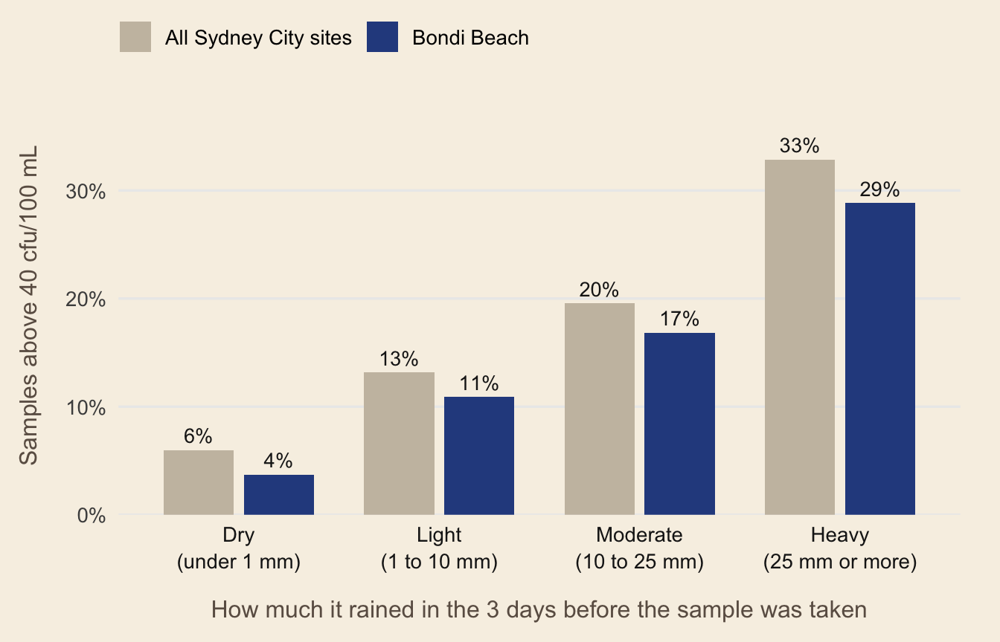

# install.packages("remotes")
remotes::install_github("ETC5523-2026/etc5523-assignment-4-abhignatippala")Sydney’s beaches are usually clean, but rain can wash stormwater and sometimes sewage into the water. beachrain helps swimmers understand how rainfall affects the water quality at their chosen beach.
Installation
Launching the app
Once you run the app, it opens in your browser, and you don’t need to download any extra data because everything is already included in the package.
Using the app
The sidebar explains what the app does and who it is designed for. From there, you can:
Choose your beach. Beaches are grouped by region. Your selected beach shows up in blue, and the other beaches in the same region show up in beige.
Choose the level to check against. You can select 40, 200 or 500 cfu/100 mL, depending on the level you want to compare.
Choose the years and swimming season. This helps you focus on the time period you want to explore.
Interpreting the outputs
The chart groups samples based on how much rain fell in the 72 hours before they were collected. Each bar shows the percentage of samples above your chosen level. If the blue bars get higher from left to right, it suggests that more rain is linked to a higher beach risk. If the blue bars are lower than the beige ones, your beach has lower risk than the surrounding region.
The value boxes show the results for dry weather and heavy rain. The sentence below the chart explains these results in simple words.
Faded bars and a yellow warning appear when there are fewer than 10 samples in a group, such as at Henley Baths in Sydney Harbour. If no samples match your selections, the app tells you what you can change to see results.
The Compare beaches after rain tab ranks every beach in the region by its rain effect: the wet-weather percentage minus the dry-weather percentage.
The analysis in code
library(beachrain)
bondi <- beach_samples[beach_samples$swim_site == "Bondi Beach", ]
bondi_summary <- summarise_exceedance(bondi, threshold = 40)
bondi_summary
#> # A tibble: 4 × 5
#> rain_band n_samples n_exceed prop_exceed few_samples
#> <fct> <int> <int> <dbl> <lgl>
#> 1 "Dry\n(under 1 mm)" 215 8 0.0372 FALSE
#> 2 "Light\n(1 to 10 mm)" 238 26 0.109 FALSE
#> 3 "Moderate\n(10 to 25 mm)" 89 15 0.169 FALSE
#> 4 "Heavy\n(25 mm or more)" 52 15 0.288 FALSEprop_exceed shows the percentage of samples in each group that are above 40 cfu/100 mL.
Compare Bondi Beach with the rest of Sydney City:
city <- beach_samples[beach_samples$region == "Sydney City", ]
plot_exceedance(
bondi_summary,
summarise_exceedance(city),
selection_label = "Bondi Beach",
context_label = "All Sydney City sites"
)
And see which beaches are affected the most when it rains:
head(compare_sites(city))
#> # A tibble: 6 × 7
#> swim_site n_dry n_wet pct_dry pct_wet rain_effect few_samples
#> <chr> <int> <int> <dbl> <dbl> <dbl> <lgl>
#> 1 Coogee Beach 223 144 9.42 41.7 32.2 FALSE
#> 2 Tamarama Beach 218 138 2.75 28.3 25.5 FALSE
#> 3 Bronte Beach 219 141 4.57 29.8 25.2 FALSE
#> 4 South Maroubra Rockpool 219 141 8.68 29.1 20.4 FALSE
#> 5 Little Bay Beach 214 140 7.94 27.1 19.2 FALSE
#> 6 Malabar Beach 222 144 16.2 34.7 18.5 FALSELimitations
Rainfall data comes from one location near Sydney Observatory Hill, so it might not capture storms that happen at individual beaches.
The NHMRC levels (40, 200 and 500 cfu/100 mL) are intended for long-term 95th percentile assessments, not individual samples. Here, they are used as reference points.
The results show past patterns and should not be used to judge today’s water quality.
Data sources
Beachwatch NSW (NSW Government) and Open-Meteo (CC BY 4.0), curated for TidyTuesday (20 May 2025) by Jen Richmond. See data-raw/beach_samples.R.